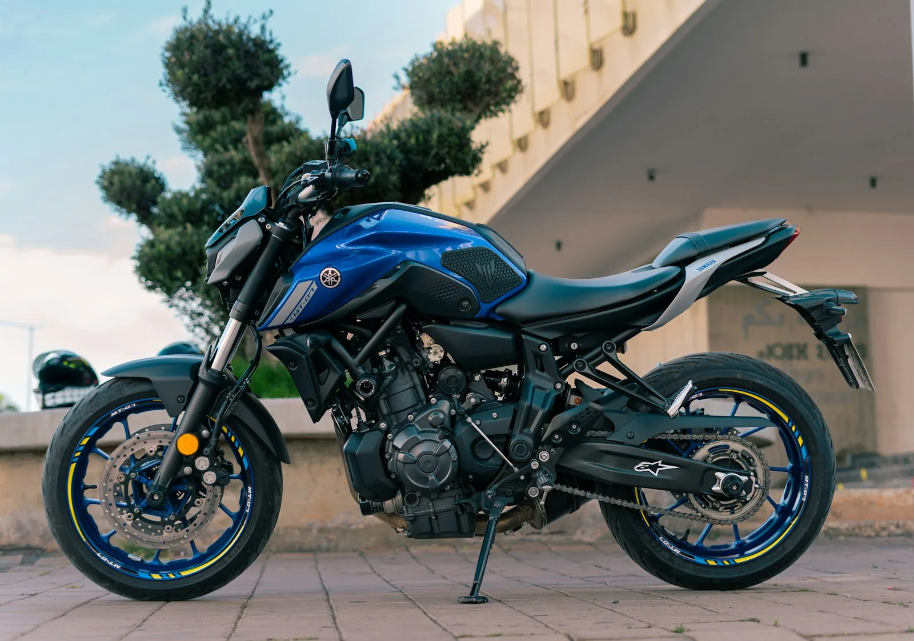
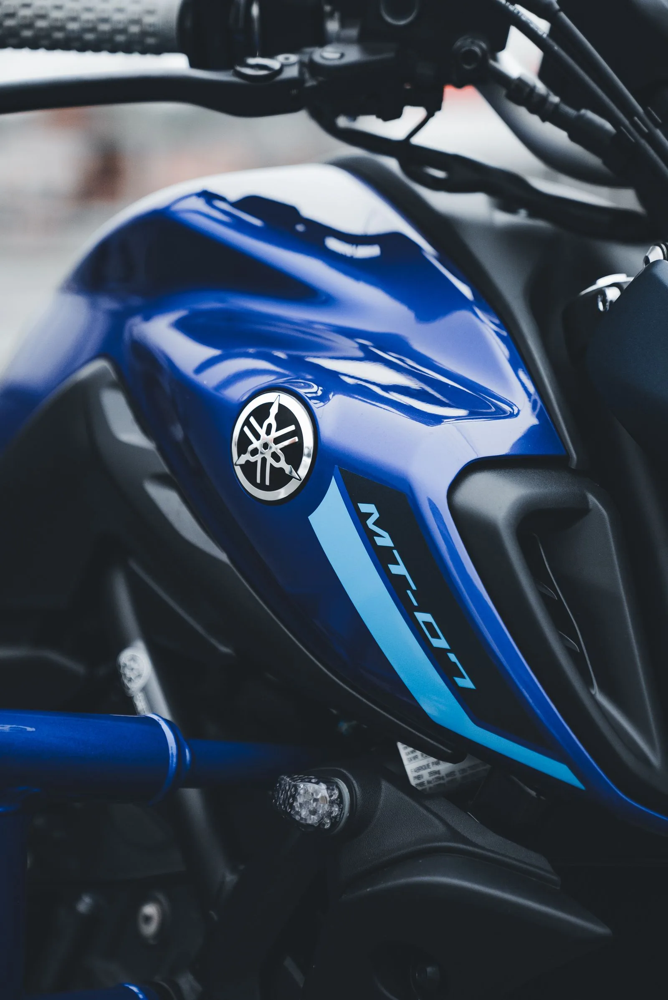
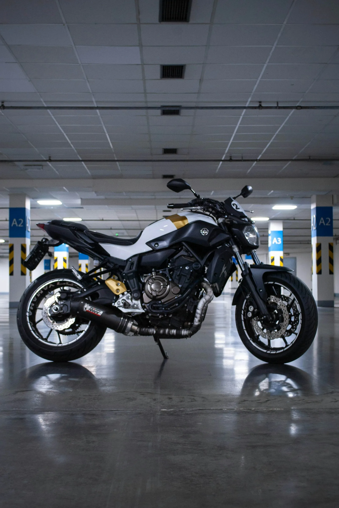

Ketting
Rijders melden regelmatig dat de ketting bij sportief of beladen gebruik sneller slijt dan bij vergelijkbare modellen. Regelmatige controle en smering elke 1.000 km is de fabrieksaanbeveling.

De MT-07 is populair om zijn karakter en betrouwbaarheid. Het officiële onderhoudsschema is eenvoudig, maar het verschil tussen de Europese en Amerikaanse fabrieksspecificatie leidt bij sommige rijders tot verwarring.
De Europese fabrieksspecificatie voor olieverversing is 10.000 km of 1 jaar, het eerste dat bereikt wordt. De Amerikaanse specificatie schrijft 6.400 km voor.
Dat verschil klinkt technisch, maar heeft voor Nederlandse rijders een praktisch gevolg. Wie weinig kilometers maakt, bereikt de jaargrens eerder dan de kilometergrens. Wie veel rijdt in wisselende omstandigheden, kiest soms bewust voor het kortere Amerikaanse interval. Het klep-interval is 40.000 km, wat voor de meeste rijders pas na meerdere jaren bereikt wordt.

De MT-07 trekt een breed publiek aan: van rijders die overstappen van een A2-motor tot mensen die een veelzijdige tussenmotor zoeken die zowel dagelijks als in het weekend werkt. De lage instapprijs, het beschikbare vermogen en het karakteristieke geluid van de CP2 maken hem aantrekkelijk voor rijders die iets zoeken met pit, zonder het gewicht en de kosten van een liter-sportmotor.
In het onderhoud is de MT-07 vergevingsgezind. De motor heeft weinig bekende constructieve zwakke punten en is goed te onderhouden door een rijder die zelf wil sleutelen. Toch loont het om onderhoud consequent bij te houden, zeker als je de motor later wilt verkopen. Een aantoonbare historie geeft vertrouwen aan een koper en verkleint de kans op discussie over de staat van de motor.
De onderstaande intervallen zijn een indicatie op basis van beschikbare bronnen (zie onderaan de tabel) en de fabrieksspecificaties voor de meest gangbare uitvoering van dit model. Ze kunnen afwijken per bouwjaar, regio en uitvoering. Controleer altijd het servicehandboek van jouw specifieke motor of vraag een erkende dealer voor de geldende specificaties.
| Werkzaamheid | Interval | Toelichting |
|---|---|---|
| Olieverversing | 10.000 km of 1 jaar | Europese fabrieksspecificatie. De Amerikaanse specificatie is 6.400 km, wat sommige rijders ook in Europa aanhouden bij intensief of wisselend gebruik. |
| Kleppen controleren | 40.000 km | Inspecteer en stel zo nodig bij. De CP2-motor houdt zijn klepspeling doorgaans goed, maar controle na 40.000 km is de fabrieksaanbeveling. |
| Bougies vervangen | 20.000 km | Standaard iridium bougies. Eerder vervangen bij startproblemen of merkbaar vermogensverlies. |
| Luchtfilter | 40.000 km | Vaker controleren en eerder vervangen bij stof of veelvuldig rijden in de regen. |
| Ketting controleren en smeren | Elke 1.000 km | Of na elke rit bij regen. Meer slijtage bij sportief gebruik. Regelmatige smering voorkomt vroegtijdig vervangen van het kettingset. |
Bron: maintenanceschedule.com (gebaseerd op Yamaha-handboek). Controleer de actuele specificaties altijd in het servicehandboek van jouw eigen motor of bij een erkende dealer.
Rijders melden regelmatig dat de ketting bij sportief of beladen gebruik sneller slijt dan bij vergelijkbare modellen. Regelmatige controle en smering elke 1.000 km is de fabrieksaanbeveling.
De Yamaha EU-spec schrijft 10.000 km voor, maar de VS-spec gaat uit van 6.400 km. Rijders die sportief rijden, veelvuldig in de stad of in wisselende omstandigheden, kiezen soms voor het kortere interval. Dat is een persoonlijke keuze van de eigenaar, geen fabrieksaanbeveling voor Nederland.
Rijders met een zwaarder gewicht melden soms dat de standaard veervoorspanning aan de zachte kant is. Aanpassing is mogelijk. Dit is een tuning-keuze en geen onderhoudspunt.
GarageBook is gebouwd voor motorrijders die hun onderhoud goed georganiseerd willen bijhouden, of ze nu zelf sleutelen of naar de dealer gaan. Je legt per beurt vast wat er is gedaan, bij welke kilometerstand, wat het heeft gekost en welke factuur of foto erbij hoort.
Bij verkoop van je MT-07 kun je de volledige onderhoudshistorie delen via een koperlink in GarageBook. De koper ziet wat er wanneer is gedaan, door wie en met welke onderdelen. Dat verkleint discussie en maakt je verhaal concreet.
Start gratis jouw digitale onderhoudsboekje


Lees ook meer over motor onderhoud bijhouden, een motor onderhoud schema, het onderhoudsboekje motor, onderhoudshistorie motor en hoe je de voertuighistorie bij verkoop gebruikt.
De Europese fabrieksspecificatie is 10.000 km of 1 jaar, het eerste dat bereikt wordt. De Amerikaanse specificatie schrijft 6.400 km voor. Rijders die sportief rijden of in wisselende omstandigheden rijden, kiezen soms voor het kortere interval, ook in Europa. Raadpleeg altijd het servicehandboek van jouw specifieke bouwjaar voor de geldende specificatie.
De fabrieksaanbeveling is 40.000 km. De CP2-motor staat bekend als stabiel wat klepspeling betreft, maar controle blijft onderdeel van het onderhoudsschema.
Rijders melden regelmatig meer kettingslijtage bij sportief of beladen gebruik. De fabrieksaanbeveling is controle en smering elke 1.000 km. Hoe snel je het kettingset vervangt, hangt af van rijstijl, gebruik van kettingspray en de kwaliteit van het originele of vervangen stel.
Ja. Een aantoonbare en doorzoekbare onderhoudshistorie geeft een koper vertrouwen in de staat van de motor. Voor een populaire motor als de MT-07, waarbij er veel aanbod is, is een aantoonbare historia een praktisch onderscheid ten opzichte van advertenties zonder onderbouwing.
Ja. Je legt per beurt vast wat je hebt gedaan, welke onderdelen je hebt gebruikt en voegt bijbehorende kassabonnen en foto's toe. Zelf uitgevoerd onderhoud is aantoonbaar als je datum, kilometerstand en bewijs vastlegt.